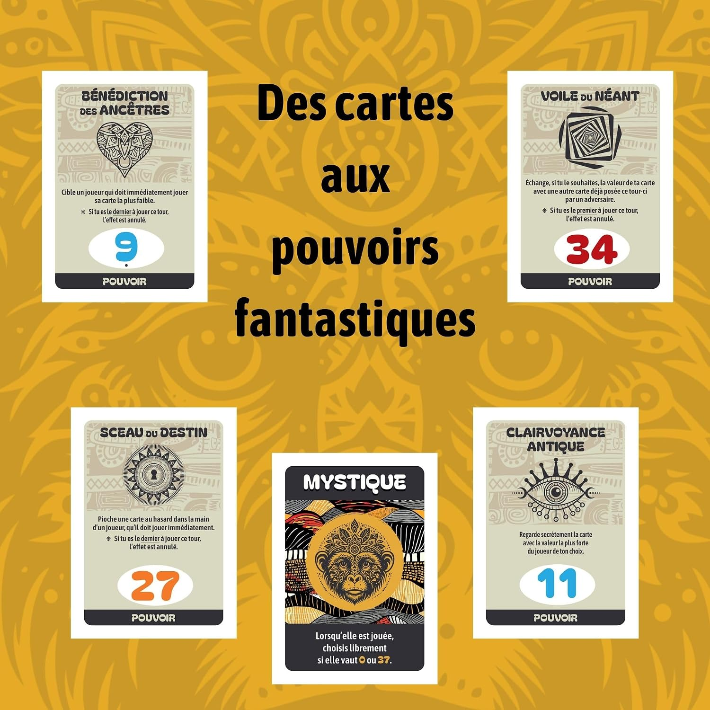

Objectif
KYRAN est un jeu de plis pour 3 à 6 joueurs. À chaque manche, on prédit combien de plis on va gagner, puis on joue ses cartes (nombres ou pouvoirs spéciaux). Si la prédiction est juste, on garde ses vies, sinon on en perd. Le joueur qui a le plus de vies à la fin devient Maître des Mystiques.
Mise en place & Matériel
Contenu de la boîte : 36 cartes Nombre (1 à 36), 1 carte Mystique, 8 cartes Pouvoir, 30 cartes Vie (1 à 5 étoiles) et 7 cartes de règles officielles.

- Mélangez les cartes Nombre (1 à 36) et les cartes aux effets spéciaux ensemble.
- Pour 3 et 4 joueurs : prendre uniquement Clairvoyance Antique (11), Sceau du Destin (27), Bénédiction des Ancêtres (20), Voile du Néant (3) et la carte Mystique.
- Pour 5 et 6 joueurs : prendre toutes les cartes Pouvoir et la carte Mystique.
- Chaque joueur reçoit un paquet de 5 cartes Vie, empilées devant lui de manière décroissante : la carte 5 étoiles au-dessus, puis 4, 3, 2 et enfin 1 étoile en bas. Ces cartes restent toujours visibles par tous.
Déroulement d'une partie
Le jeu se déroule en plusieurs manches jusqu'à ce qu'un joueur ait perdu toutes ses vies. Le nombre de cartes distribuées diminue progressivement : 7 → 6 → 5 → 4 → 3 → 2, puis la célèbre manche Mystique à 1 carte. Le donneur change chaque tour dans le sens des aiguilles d'une montre. Une fois ce cycle terminé, un nouveau cycle recommence à 7 cartes.
1) Phase de paris
- En commençant à gauche du donneur, chacun annonce à voix haute combien de plis il pense gagner.
- Règle d'or : la somme totale des paris ne doit jamais être égale au nombre de plis en jeu. Le dernier joueur doit obligatoirement ajuster son annonce si nécessaire.

2) Phase de jeu
- Le joueur à gauche du donneur commence. Chacun joue une carte face visible, dans le sens des aiguilles d'une montre.
- Les cartes Pouvoir s'activent immédiatement au moment où elles sont posées.
- La carte Nombre la plus forte remporte le pli. En cas d'égalité entre une carte Nombre et une carte Pouvoir, la carte Pouvoir l'emporte toujours.
- Le gagnant de chaque pli remporte les cartes et entame le pli suivant.

3) Fin de manche & Résolution
- Chaque joueur compare son pari au nombre de plis réellement remportés :
- Pari réussi : si un joueur a gagné exactement le nombre de plis annoncés, il ne perd aucune carte Vie.
- Pari raté : le joueur perd un nombre de cartes Vie égal à la différence entre son pari et ses plis remportés.

La Manche Mystique (Finale à l'aveugle)
Chaque joueur pioche 1 seule carte et la place contre son front, tenue à la main, de sorte qu'elle soit visible par tous les autres joueurs mais totalement invisible pour lui-même.
- Phase des paris : En observant uniquement les cartes collées sur le front des adversaires, chaque joueur parie à tour de rôle s'il va remporter le pli (1) ou non (0).
- Phase du pli : Tous les joueurs abattent leur carte sur la table en même temps. Les effets de texte des cartes Pouvoir ne sont pas activés pendant cette manche.
- Valeur de la Mystique : La carte Mystique vaut 37 si son propriétaire a parié qu'il remportait le pli, ou 0 s'il a annoncé ne pas le faire. En cas d'égalité avec une carte Nombre, la carte Pouvoir l'emporte.
- Résolution :
- ✅ Pari réussi : aucune carte Vie perdue.
- ❌ Pari raté : perte de 1 carte Vie (exemple : il pensait ne pas remporter le pli mais sa carte est la plus forte).
Fin du jeu
- Le premier joueur à perdre toutes ses cartes Vie est déclaré éliminé et la partie prend fin.
- Le joueur possédant le plus grand nombre de cartes Vie restantes est sacré Maître des Mystiques. En cas d'égalité de vies restantes, les survivants se départagent sur une ultime manche Mystique.
Cartes aux effets spéciaux
Carte Mystique — Lorsqu'elle est jouée hors manche Mystique, le joueur choisit librement la valeur 0 ou 37 au moment de la poser. Elle est la carte la plus forte du jeu.
Cartes Pouvoir — Toujours gagnantes en cas d'égalité avec une carte Nombre de même valeur.


La Mystique (valeur 0 ou 37)
Carte suprême du jeu. Renverse n'importe quelle carte et garantit le pli lorsqu'elle est jouée à 37.

Sceau du Destin (valeurs 27 & 4)
Piochez au hasard une carte dans la main d'un joueur, qu'il est forcé de jouer immédiatement. Si vous êtes le dernier à jouer ce tour, l'effet est annulé.

Clairvoyance Antique (valeurs 11 & 23)
Regardez secrètement la carte avec la valeur la plus forte du joueur de votre choix pour anticiper son pari.

Bénédiction des Ancêtres (valeurs 20 & 9)
Forcez un joueur cible à abattre immédiatement sa carte la plus faible. Si vous êtes le dernier à jouer ce tour, l'effet est annulé.

Voile du Néant (valeurs 3 & 34)
Échangez la valeur de votre carte avec une autre carte déjà posée ce tour-ci par un adversaire. Si vous êtes le premier à jouer, l'effet est annulé.
Variante d'initiation
Pour une toute première partie ou avec de jeunes enfants, jouez sans carte Pouvoir ni carte Mystique. Cela permet d'assimiler la gestion des paris et des plis avant d'ajouter les retournements de situation.